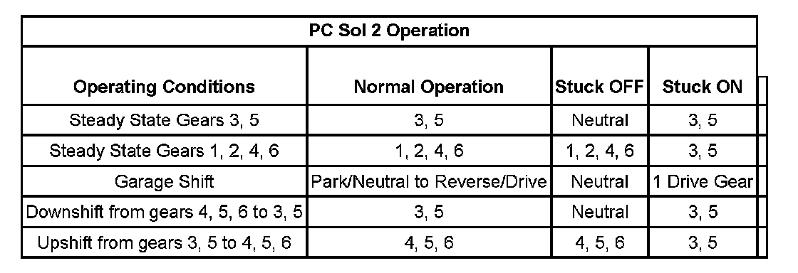

P0776
DTC P0776 or P0777
Diagnostic Instructions
^ Perform the Diagnostic System Check - Vehicle prior to using this diagnostic procedure. Initial Inspection and Diagnostic Overview
^ Review Strategy Based Diagnosis for an overview of the diagnostic approach.
^ Diagnostic Procedure Instructions provides an overview of each diagnostic category.
DTC Descriptors
DTC P0776
Clutch Pressure Control (PC) Solenoid 2 - Stuck Off
DTC P0777
Clutch Pressure Control (PC) Solenoid 2 - Stuck On
Circuit/System Description
The clutch pressure control (PC) solenoid 2 is part of the control solenoid (w/body and TCM) valve assembly and is not serviced separately. The clutch PC solenoid 2 flows fluid to the 3-5-R clutch when commanded OFF and exhausts fluid when commanded ON. The clutch PC solenoid 2 regulates the transmission fluid pressure to the 3-5-R clutch. The TCM calculates gear ratio based on data from the automatic transmission input speed sensor (ISS) and the output speed sensor (OSS). The TCM compares the known transmission gear ratio to a calculated gear ratio for each commanded gear.
Conditions for Running the DTC
^ No DTCs P0716 or P0717.
^ No DTCs P0722 or P0723.
^ No DTCs P1825 or P1915.
P0776
^ The transmission input shaft speed is greater than 60 RPM.
^ 3-5-R clutch is commanded ON.
P0777
^ The transmission output shaft speed is greater than 200 RPM.
^ 3-5-R clutch is commanded OFF.
Conditions for Setting the DTC
P0776
The TCM detects an incorrect on-coming clutch gear ratio, or flare, when the 3-5-R clutch is commanded ON for 0.5 seconds and the transmission input shaft speed is greater than 75 RPM from the anticipated input shaft speed.
P0777
The TCM detects an incorrect off-going clutch gear ratio, or tie-up, when the 3-5-R clutch is commanded OFF for 0.5 seconds and the transmission input shaft speed is greater than 40 RPM from the anticipated input shaft speed.
Action Taken When the DTC Sets
^ DTCs P0776 and P0777 are Type A DTCs. Refer to Diagnostic Trouble Code (DTC) Type Definitions and Diagnostic Trouble Code (DTC) List/Type. Diagnostic Trouble Code Descriptions Diagnostic Trouble Code Descriptions
^ The TCM commands maximum line pressure.
^ The TCM inhibits TCC.
^ The TCM freezes transmission adaptive functions.
Conditions for Clearing the DIC/DTC
DTCs P0776 and P0777 are Type A DTCs.
Diagnostic Aids
^ When attempting to set transmission performance DTCs, observe the Freeze Frame and Failure Records to assist in duplicating the failure conditions.
^ If diagnosing a P0776 DTC and you know the 3-5-R Clutch is not stuck ON, inspect for a sticking clutch select valve 2.
Reference Information
Schematic Reference
Automatic Transmission Controls Schematics
Connector End View Reference
^ Automatic Transmission Inline 16-Way Connector End View
^ Automatic Transmission Internal Connector End Views
^ Automatic Transmission Related Connector End Views
DTC Type Reference
^ Diagnostic Trouble Code (DTC) Type Definitions
^ Diagnostic Trouble Code (DTC) List/Type
Electrical Information Reference
^ Circuit Testing
^ Connector Repairs
^ Testing for Intermittent Conditions and Poor Connections
^ Wiring Repairs
Scan Tool Reference
^ Scan Tool Output Controls
^ Scan Tool Data List
^ Scan Tool Data Definitions
Special Tools Required
^ DT-47825 Control Solenoid Test Plate
^ DT-47825-10 Jumper Harness
Circuit/System Verification
1. Perform the Transmission Fluid Checking. Transmission Fluid Check
2. Operate the vehicle in drive with the calculated throttle position greater than 15% to obtain 72 km/h (45 mph).
^ If the DTC resets, go to Circuit/System Testing.
Circuit/System Testing
1. Perform the Line Pressure Check. Line Pressure Check
^ If the pressure is out of specification, correct this concern first.
2. Perform the Control Solenoid Valve and Transmission Control Module Assembly Cleaning and retest the DTC as outlined in the Circuit/System Verification steps. Control Solenoid Valve and Transmission Control Module Assembly Inspection
^ If the DTC resets, continue on with testing.
3. Perform the Control Solenoid Valve and Transmission Control Module Assembly Inspection. Control Solenoid Valve and Transmission Control Module Assembly Inspection
^ If a concern is found, repair or replace the control solenoid (w/body and TCM) valve assembly.
4. Perform the Control Solenoid Valve and Transmission Control Module Assembly Solenoid Performance Test. Control Solenoid Valve and Transmission Control Module Assembly Solenoid Performance Test
^ If the solenoid is found to be leaking or stuck closed, replace the control solenoid (w/body and TCM) valve assembly.
5. Inspect the control valve lower body assembly for sticking valves, damage, scored bores, or debris.
^ If a concern if found in the valve body, repair or replace the valve body as necessary.
6. Inspect the 3-5-R clutch assembly for damage.
^ If a concern is found in the 3-5-R clutch assembly, repair or replace as necessary.
Component Testing

Repair Instructions
Perform the Diagnostic Repair Verification after completing the diagnostic procedure. Verification Tests
^ Control valve body replacement. Refer to Control Valve Lower Body and Upper Body Replacement.
^ 3-5-R clutch assembly repair or replace. Refer to 1-2-3-4 and 3-5 Reverse Clutch Overhaul (6L50/6L80).
^ Control solenoid (w/body and TCM) valve assembly replacement. Refer to Control Module References for replacement, setup, and programming. Programming and Relearning
^ Perform the Service Fast Learn Adapts. Programming and Relearning